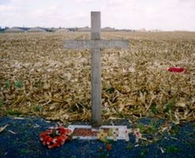

(This essay was originally published in The New American magazine.)
In August 1914, Europe's major powers threw themselves into war with gleeful abandon. Germany, a rising power with vast aspirations, plowed across Belgium, seeking to checkmate France quickly before Russia could mobilize, thereby averting the prospect of a two-front war. Thousands of young Germans, anticipating a six-week conflict, boarded troop trains singing the optimistic refrain: "Ausflug nach Paris. Auf Widersehen auf dem Boulevard." ("Excursion to Paris. See you again on the Boulevard.")
The French were eager to avenge the loss of Alsace and Lorraine to Germany in 1870. The British government, leery of Germany's growing power, mobilized hundreds of thousands of young men to "teach the Hun a lesson." Across the continent, writes British historian Simon Rees, "millions of servicemen, reservists and volunteers ... rushed enthusiastically to the banners of war.... The atmosphere was one of holiday rather than conflict."
Each side expected to be victorious by Christmas. But as December dawned, the antagonists found themselves mired along the Western Front – a static line of trenches running for hundreds of miles through France and Belgium. At some points along the Front, combatants were separated by less than 100 feet. Their crude redoubts were little more than large ditches scooped out of miry, whitish-gray soil. Ill-equipped for winter, soldiers slogged through brackish water that was too cold for human comfort, but too warm to freeze.
The unclaimed territory designated No Man's Land was littered with the awful residue of war – expended ammunition and the lifeless bodies of those on whom the ammunition had been spent. The mortal remains of many slain soldiers could be found grotesquely woven into barbed wire fences. Villages and homes lay in ruins. Abandoned churches had been appropriated for use as military bases.

As losses mounted and the stalemate hardened, war fever began to dissipate on both sides. Many of those pressed into service on the Western Front had not succumbed to the initial frenzy of bloodlust. Fighting alongside French, Belgian, and English troops were Hindus and Sikhs from India, as well as Gurkhas from the Himalayan Kingdom of Nepal.
These colonial conscripts had been transported from their native soil and deployed in trenches carved out of wintry Belgian cabbage patches. Highland Scots were also found at the Front, proudly wearing their kilts in defiance of the bitter December cold.
The German troops were led by elite Prussian officers, representatives of the bellicose Junker aristocracy. The German rank and file included Bavarian, Saxon, Westphalian, and Hessian reservists, more than a few of whom had lived – or even been born – in England and spoke perfect English. Bismarck's efforts to unite the scattered German principalities notwithstanding, many German troops remained more attached to their local communities than to what for them was an abstract German nation.
Comrades at Arms
Wallowing in what amounted to cold, fetid sewers, pelted by freezing rain, and surrounded by the decaying remains of their comrades, soldiers on both sides grimly maintained their military discipline. On December 7, Pope Benedict XV called for a Christmas cease-fire. This suggestion earned little enthusiasm from political and military leaders on both sides. But the story was different for the exhausted frontline troops.
A December 4 dispatch from the commander of the British II Corps took disapproving notice of a "live-and-let-live theory of life" that had descended on the Front. Although little overt fraternization was seen between hostile forces, just as little initiative was shown in pressing potential advantages. Neither side fired at the other during meal times, and friendly comments were frequently bandied about across No Man's Land. In a letter published by the Edinburgh Scotsman, Andrew Todd of the Royal Engineers reported that soldiers along his stretch of the Front, "only 60 yards apart at one place ... [had become] very 'pally' with each other."
Rather than flinging lead at their opponents, the troops would occasionally hurl newspapers (weighted with stones) and ration tins across the lines. Barrages of insults sometimes erupted as well, but they were delivered "generally with less venom than a couple of London cabbies after a mild collision," reported Leslie Walkinton of the Queen's Westminster Rifles.
As December waxed, the combat ardor of the frontline troops waned. With Christmas approaching, the scattered and infrequent gestures of goodwill across enemy lines increased. About a week before Christmas, German troops near Armentieres slipped a "splendid" chocolate cake across the lines to their British counterparts. Attached to that delectable peace offering was a remarkable invitation:
We propose having a concert tonight as it is our Captain's birthday, and we cordially invite you to attend – provided you will give us your word of honor as guests that you agree to cease hostilities between 7:30 and 8:30.... When you see us light the candles and footlights at the edge of our trench at 7:30 sharp you can safely put your heads above your trenches, and we shall do the same, and begin the concert.
The concert proceeded on time, with the bewhiskered German troops singing "like Christy Minstrels," according to one eyewitness account. Each song earned enthusiastic applause from the British troops, prompting a German to invite the Tommies to "come mit us into the chorus." One British soldier boldly shouted, "We'd rather die than sing German." This jibe was parried instantly with a good-natured reply from the German ranks: "It would kill us if you did." The concert ended with an earnest rendition of "Die Wacht am Rhein," and was closed with a few shots deliberately aimed at the darkening skies – a signal that the brief pre-Christmas respite was ended.
Elsewhere along the Front, arrangements were worked out to retrieve fallen soldiers and give them proper treatment or burial.

In a letter to his mother, Lt. Geoffrey Heinekey of the 2nd Queen's Westminster Rifles described one such event that took place on December 19. "Some Germans came out and held up their hands and began to take in some of their wounded and so we ourselves immediately got out of our trenches and began bringing in our wounded also," he recalled. "The Germans then beckoned to us and a lot of us went over and talked to them and they helped us to bury our dead. This lasted the whole morning and I talked to several of them and I must say they seemed extraordinarily fine men.... It seemed too ironical for words. There, the night before we had been having a terrific battle and the morning after, there we were smoking their cigarettes and they smoking ours."
Soon talk along the Front turned to the prospect of a formal cessation of hostilities in honor of Christmas. Again, this idea met resistance from above. Comments historian Stanley Weintraub, in his book, Silent Night: The Story of the World War I Christmas Truce:
Most higher-ups had looked the other way when scattered fraternization occurred earlier. A Christmas truce, however, was another matter. Any slackening in the action during Christmas week might undermine whatever sacrificial spirit there was among troops who lacked ideological fervor. Despite the efforts of propagandists, German reservists evidenced little hate. Urged to despise the Germans, [British] Tommies saw no compelling interest in retrieving French and Belgian crossroads and cabbage patches. Rather, both sides fought as soldiers fought in most wars – for survival, and to protect the men who had become extended family.
In a sense, the war itself was being waged within an extended family, since both Germany's Kaiser Wilhelm II and England's King George V were grandsons of Queen Victoria. More importantly, the warring nations were all part of what had once been known as Christendom. The irony of this fact was not lost on those sentenced to spend Christmas at the Front.
By Christmas Eve, the German side of the Front was radiant with glowing Tannenbeume – small Christmas trees set up, sometimes under fire, by troops determined to commemorate the holy day. "For most British soldiers, the German insistence on celebrating Christmas was a shock after the propaganda about Teutonic bestiality, while the Germans had long dismissed the British as well as the French as soulless and materialistic and incapable of appreciating the festival in the proper spirit," writes Weintraub. "Regarded by the French and British as pagans – even savages – the pragmatic Germans were not expected to risk their lives on behalf of each beloved Tannenbaum. Yet when a few were felled by Scrooge-like gunfire, the Saxons opposite the [British line] stubbornly climbed the parapets to set the endangered trees up once more."
The radiant Christmas trees reminded some Indian conscripts of lanterns used to celebrate the Hindu "Festival of Lights." Some of them must have been puzzled over finding themselves freezing, undernourished, and confronting a lonely death thousands of miles from their homes as soldiers in a war which pitted Christian nations against each other. "Do not think that this is war," wrote one Punjabi soldier in a letter to a relative. "This is not war. It is the ending of the world."
But there were souls on each side of that fratricidal conflict determined to preserve the decencies of Christendom, even amid the conflict. As Christmas dawned, German Saxon troops shouted greetings to the British unit across from it: "A happy Christmas to you, Englishmen!" That welcome greeting prompted a mock-insulting reply from one of the Scottish troops, who was mildly irritated at being called an Englishman: "The same to you Fritz, but dinna o'er eat youself wi' they sausages!"
A sudden cold snap had left the battlefield frozen, which was actually a relief for troops wallowing in sodden mire. Along the Front, troops extracted themselves from their trenches and dugouts, approaching each other warily, and then eagerly, across No Man's Land. Greetings and handshakes were exchanged, as were gifts scavenged from care packages sent from home. German souvenirs that ordinarily would have been obtained only through bloodshed – such as spiked pickelhaube helmets, or Gott mit uns belt buckles – were bartered for similar British trinkets. Carols were sung in German, English, and French. A few photographs were taken of British and German officers standing alongside each other, unarmed, in No Man's Land.
Near the Ypres salient, Germans and Scotsmen chased after wild hares that, once caught, served as an unexpected Christmas feast. Perhaps the sudden exertion of chasing wild hares prompted some of the soldiers to think of having a football match. Then again, little prompting would have been necessary to inspire young, competitive men – many of whom were English youth recruited off soccer fields – to stage a match. In any case, numerous accounts in letters and journals attest to the fact that on Christmas 1914, German and English soldiers played soccer on the frozen turf of No Man's Land.

British Field Artillery Lieutenant John Wedderburn-Maxwell described the event as "probably the most extraordinary event of the whole war – a soldier's truce without any higher sanction by officers and generals...."
This isn't to say that the event met with unqualified approval. Random exchanges of gunfire along the Front offered lethal reminders that the war was still underway.
From his rearward position behind the lines, a "gaunt, sallow soldier with a thick, dark mustache and hooded eyes" witnessed the spontaneous eruption of Christian fellowship with hateful contempt. The German Field Messenger of Austrian birth heaped scorn on his comrades who were exchanging Christmas greetings with their British counterparts. "Such a thing should not happen in wartime," groused Corporal Adolf Hitler. "Have you no German sense of honor left at all?" "More than patriotic scruples were involved" in Hitler's reaction, notes Weintraub. "Although a baptized Catholic, he rejected every vestige of religious observance while his unit marked the day in the cellar of the Messines monastery."
What If ...?
In a January 2, 1915 account of the Christmas Truce, the London Daily Mirror reflected that "the gospel of hate" had lost its allure to soldiers who had come to know each other.
"The soldier's heart rarely has any hatred in it," commented the paper. "He goes out to fight because that is his job. What came before – the causes of the war and the why and wherefore – bother him little. He fights for his country and against his country's enemies. Collectively, they are to be condemned and blown to pieces. Individually, he knows they're not bad sorts."
"Many British and German soldiers, and line officers, viewed each other as gentlemen and men of honor," writes Weintraub. The rank and file came to understand that the man on the other end of the rifle, rather than the soulless monster depicted in ideological propaganda, was frightened and desperate to survive and return to his family. For many along the Front, these realities first became clear in the light cast by the German Tannenbaum.
In the shared symbol of the Christmas tree – an ornament of pagan origins appropriated by Christians centuries ago – British and German troops found "a sudden and extraordinary link," observed British author Arthur Conan Doyle after the war (a conflict that claimed his son's life). "It was an amazing spectacle," Doyle reflected, "and must arouse bitter thought concerning the high-born conspirators against the peace of the world, who in their mad ambition had hounded such men on to take each other by the throat rather than by the hand."
In a remarkable letter published by The Times of London on January 4, a German soldier stated that "as the wonderful scenes in the trenches [during Christmas] show, there is no malice on our side, and none in many of those who have been marshaled against us." But this was certainly not true of those who orchestrated the war, the "high-born conspirators against the peace of the world." As British historian Niall Ferguson points out, the war-makers' plans for the world required "Maximum slaughter at minimum expense."
The informal truce held through Christmas and, at some points along the Front, through the following day (known as "Boxing Day" to British troops). But before New Year's Day the war had resumed in all of its malignant fury, and the suicide of Christendom continued apace.
Most wars are senseless exercises in mass murder and needless destruction. World War I, however, is remarkable not only for being more avoidable and less justifiable than most wars, but also for its role in opening the gates of hell. Mass starvation and economic ruin inflicted on Germany during the war and its aftermath cultivated the National Socialist (Nazi) movement. Nearly identical ruin wrought in Russia thrust Lenin and the Bolsheviks to power. Benito Mussolini, a socialist agitator once regarded as Lenin's heir, rose to power in Italy. Radical variants of intolerant totalitarian nationalism ulcerated Europe. The seeds of future wars and terrorism were deeply sewn in the Middle East.
What if the Christmas Truce of 1914 had held? Might a negotiated peace have ensued, preserving Christendom for at least a while longer? We do not know. It is doubtful that the "high-born conspirators against the peace of the world" would have been long deterred in pursuing their demented plans. But the truce – a welcome fermata in the symphony of destruction – illustrated a timeless truth of the nature of the human soul as designed by its Creator.
Reflecting on the Christmas Truce, Scottish historian Roland Watson writes: "The State bellows the orders 'Kill! Maim! Conquer!' but a deeper instinct within the individual does not readily put a bullet through another who has done no great offense, but who rather says with them, 'What am I doing here?'"
For a tragically short time, the Spirit of the Prince of Peace drowned out the murderous demands of the State.
***
***

Tune in for Pro Libertate Radio weeknights from 7:00-8:00 Central on the Liberty News Radio Network.
13 comments:
Sweet words, my brother. If with every call to war, only those who demanded it were left to do the fighting, the world would be an infinitely more sensible place.
Will, I've read this story so many times, but this telling of it may have been the most eloquent of all. God bless and Merry Christmas!
"Auf Widersehen" => "Auf Wiedersehen"
"Tannenbeume" => "Tannenbäume"
Amazing isn't it. Today we do business with people we once bombed mercilessly (the Vietnamese). So what was the point of all that? Today we do likewise to others who have never raised their hand in anger to any one of us and perhaps we may one day clasp our hands in friendship and respect instead. What a different kind of world we would all live in where we to simply silence the voices of death that pretend to be our leaders. If they are so hell bent on killing someone they can go over there and do it all by themselves and on their individual dime to boot. Everyone else can have a bite of chocolate, smoke a cig, or play a game of football.
Anon @ 2:38 and 2:59 --
Donkey shane, and gooten on bend! j/k.
A very nice reminder on this Christmas night.
To you and all of your regulars
Merry Christmas
Happy Holidays
and the best to all who in Liberty unite here
Enjoy your family, friends and neighbors - as Will has shown, Leviathan can wait for another day.
And Will, my thoughts are with you and your brother.
In Male Fide
Sic Semper Tyrannis
Amen, amen, amen.
American Countrey Music has memorialozed this most sacred of events -- Collin Raye Sings "It Could Happen Again".
Then, as today, the malice is in the hearts of the leaders, not residing in the heart of the common man.
History reveals the consequences of picking leaders poorly and is on display for anyone to see unless willingly blind.
Today we have leaders picked poorly and the majority of the citizenry is willingly blind. The results are predictable. Look around you.
I've been studying the origins of WWI for over ten years now and have yet to find any rhyme or reason for the madness except that very evil men wanted to make their fortunes off of the slaughter. Why the men in the trenches didn't turn their guns 180 degrees and shoot the real enemy is the puzzling thing. Such is the power of the state to beguile the sheeple. If men would only refuse to be pawns of the power elite.
Mr. Grigg,
I was aware of this event in 1914, but did not know all these details. Thank you for a wonderful exposition of this amazing moment of history.
Fellow readers,
To bring Mr. Grigg's essay into a modern perspective, PLEASE go to this video below, of a speech by a young US soldier returned from IRAQ, speaking before a meeting of Iraq Veterans Against the War:
http://vodpod.com/watch/2738558-amazing-speech-by-war-veteran?mp=1&pod=peterchamberlin
It is most eloquent. I wish I had a transcript I could post for you to read, but in any case his voice, close to tears, is even more powerful.
Thank you, and have a better year in 2010 than this one was.
Sincerely,
Lemuel Gulliver.
Mr. Grigg,
The last time I wrote here, I made statements about the origins of 9-11-2001, the pretext for this eternal war which is claiming the lives of our youth and vast amounts of our treasure. Some people took exception to my claims and called me sick in the head.
Here is one more piece of evidence: a video from the BBC (a reliable source, I think,) which reveals that "Al Qaeda" never existed, which I also stated in my posting, but is a fictitious organization invented by the FBI and USGOV in January 2001:
http://vodpod.com/watch/2018226-bbc-now-admits-al-qaeda-never-existed?mp=1&pod=peterchamberlin
The term "Al Qaeda" was the Arabic name of the CIA database of Afghan Mujahedeen fighting the Soviets in Afghanistan in the 1980's. It was resurrected by a witness (who had stolen money from Osama Bin Laden) in the Embassy Bombings court case in New York in January 2001, and used to designate Bin Laden's fictitious terrorist network.
As I said in my prior post, 9-11 was planned and organized right here in the USA, using Islamic fundamentalist Saudi dissidents as hijackers (whom the Saudi government was probably only too happy to have them kill themselves,) with the understanding that Osama, the black sheep of the Bin Laden Family, (bosom pals and business partners of the Bush Family,) would be the fall guy.
Just like the Nazi Holocaust, of which no documentary evidence has ever come to light, it is very likely that no proof of the Bush Family's and their friends' complicity in 9-11 will ever be found. But it is the only thing which makes perfect sense of all the events of that dreadful day.
Not only that, but the Bush plotters fabricated links between this fictitious "Al Qaeda" and Saddam Hussein in order to embroil this nation in a war to topple him. The US motive was to seize Iraqi oil for Mr. Cheney's and Poppy Bush's friends, and the Israeli payoff for co-operating in the 9-11 plot was our elimination of Saddam for them, while spending our money and our sons' lives.
We were then supposed to eliminate the ayatollahs in Iran for the very same reasons.
Unfortunately, not only did the 9-11 plot ultimately fail because the plane which went down in Pennsylvania never hit the Capitol as it was supposed to do, thereby opening the way for a Presidential dictatorship, but also because the Iraqi people refused to allow us to steal their oil. Trillions of dollars and almost a million deaths later, absolutely nothing has been achieved. Our economy is in ruins, our bleeding military is reduced to buying off our enemies, Israel is in a far more dangerous position than before, and all that Iraqi oil remains in the ground because the resistance keeps blowing up the pipelines.
As I keep saying, be of good cheer, for God will not be mocked. Lies, theft and murder will never produce good results, as the German people learned too late in 1945.
Those who take up the sword will perish by the sword.
Lemuel Gulliver.
Mr. Grigg,
Finally, a word about Obama's troop surge in Afghanistan, the latest saga in our endless wars.
Here is another video, in which a former Russian Lieutenant-General talks about his experiences in Afghanistan:
http://vodpod.com/watch/2739833-afghanistan-war-the-soviet-lesson-not-learned?mp=1&pod=peterchamberlin
He says the Soviets won 90% of their battles, and there was not one inch of territory that their 500,000 soldiers (vs. our 130,000) did not conquer, but in the end they lost the hearts of the Afghan people and the war, not having succeeded in holding a single inch of ground at all.
Their Afghan War brought down the Soviet Empire. If we keep on with our own insanity, I believe Afghanistan will bring down the American Empire also. God help us and the rest of the world when that happens.
Who knows what worldwide economic, political and ecological chaos might result when Pax Americana collapses? Another barbaric and savage Dark Ages like what followed the collapse of Rome? God only knows.
Lemuel Gulliver.
Post a Comment